C++静态库和动态库用法
2018年07月19日 23:50:11 ShaYX1991 阅读数 2603更多
分类专栏： C++知识点
版权声明：本文为博主原创文章，遵循 CC 4.0 BY-SA 版权协议，转载请附上原文出处链接和本声明。
本文链接：https://blog.csdn.net/a369189453/article/details/81124685
从事软件工作也有两年了,C++静态库和动态库也用了不少,但都是依葫芦画瓢,一直没具体去研究一下二者的区别,加载方式等,今天花时间看了几篇博客,重新学习了一下,做出如下笔记。
静态库和动态库从字面意思来看，区别就是静态和动态。而这里的静态和动态指的是库的链接阶段。可以看如下的编译过程。
- 静态库：在链接阶段库将会与目标汇编后的目标文件.o一起打包生成可执行文件。成为可执行文件的一部分，后续此库就可以消失了。也就是说在编译的最后一步（链接阶段），如果程序需要使用静态库，在这一步都会一起打包到可执行文件中。
- 动态库：而动态库在编译阶段都不会有什么动作，只有在程序运行时才被加载，也就是动态库的链接是发生在程序运行时期的，它和可执行文件是分开的，只是可执行文件在运行的某个时期调用了它。
分清楚二者区别之后，二者的优缺点就自然可以分出来了。
| 优点 | 缺点 | |
| 静态库 | 1、 使可执行文件依赖项少，已经被打包到可执行文件中了 2、 编译阶段完成链接，执行期间代码装载速度快 |
1、 使可执行文件变大 2、 若作为其他库的依赖库，将会造成多余的副本，因为必须与目标文件打包 3、 升级不方便，升级必须重新编译 |
| 动态库 | 1、 动态库可以实现进程之间资源共享，有一份就行 2、 升级程序简单，不需要重新编译 |
1、 运行期间在加载，将会减慢代码执行速度 2、 增加程序的依赖项，必须跟着可执行文件一起 |
Tables |
Windows | Linux |
| 静态库 | .lib | Libxxx.a |
| 动态库 | .dll与.lib | libxxx.so |
这里我仅讨论windows下的使用vs的情况。
在创建win32控制台程序或者win32项目的时候，勾选静态库就可以，进入项目后也可打开工程“属性面板”—》”配置属性”—》”常规”—》配置类型选择静态库。
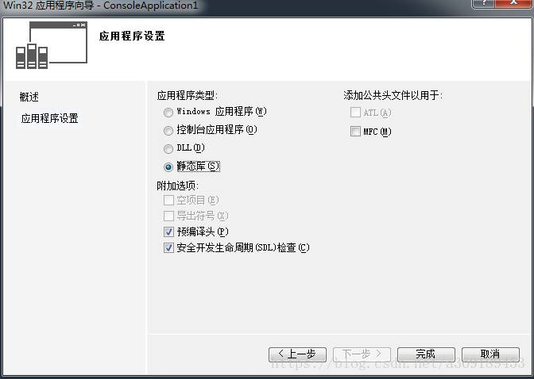
创建好之后，里面在就正常的写函数或者类，将接口放在.h头文件中，编译后边生成了静态库。
测试代码：
- 头文件：

- 源文件：
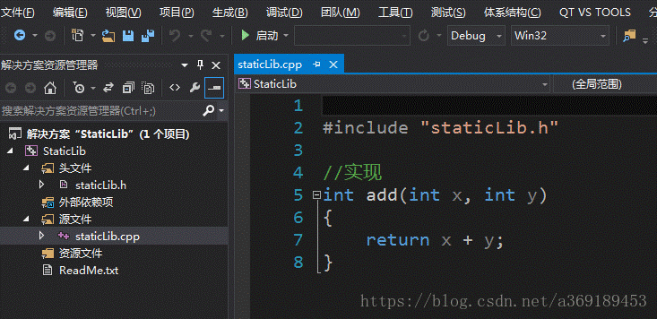
- 生成静态库：
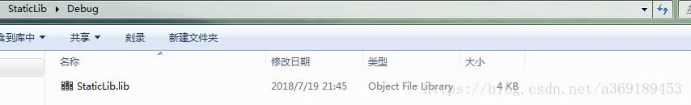
需要文件、接口头文件、.lib库文件。
方式1
步骤1：包头文件。工程“属性面板”—》”配置属性” —》“C/C++” —》” 常规”，在“附加包含目录”属性值中，键入StaticLib.h 头文件所在目录的路径或浏览至该目录。
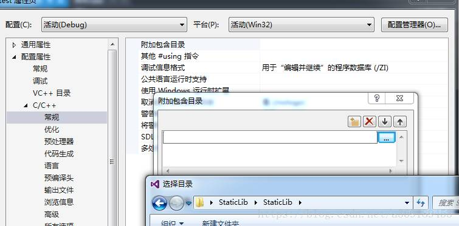
步骤2：“属性面板”—》”配置属性”—》“链接器”—》”常规”，附加依赖库目录中输入，静态库所在目录；
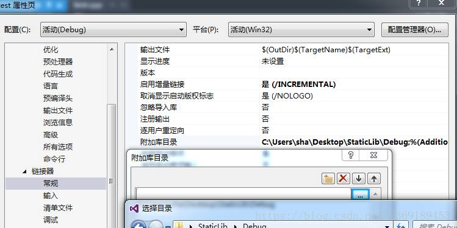
步骤3：“属性面板”—》”配置属性”—》“链接器”—》”输入”，附加依赖库中输入静态库名StaticLib.lib。
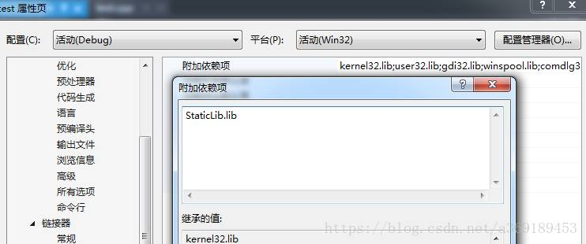
步骤4：使用，引用头文件，即可使用里面的接口。
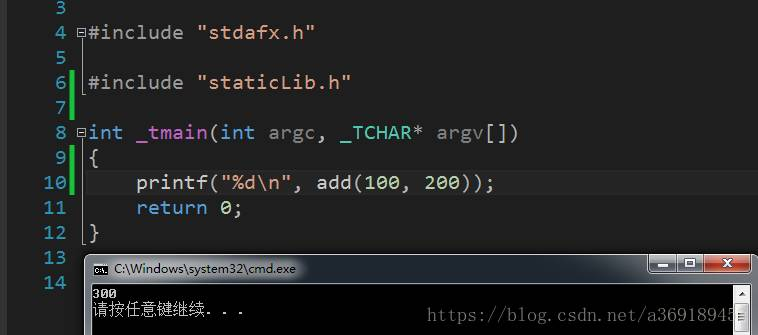
方式2
步骤1同方式1。
步骤二：
打开工程“属性面板”—》”配置属性” —》“链接器”—》”命令行”，输入静态库的完整路径即可。
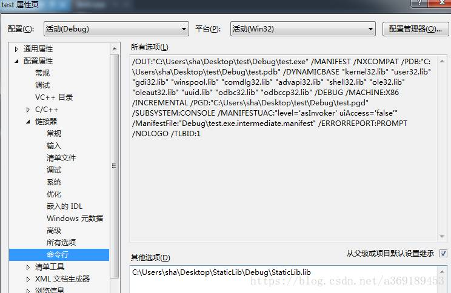
方式3：
步骤1同方式1。
步骤2：前提，加载的静态库属于同一解决方案。
工程“属性面板”—》“通用属性”—》 “框架和引用”—》”添加引用”，将显示“添加引用”对话框。 “项目”选项卡列出了当前解决方案中的各个项目以及可以引用的所有库。 在“项目”选项卡中，选择 StaticLib。 单击“确定
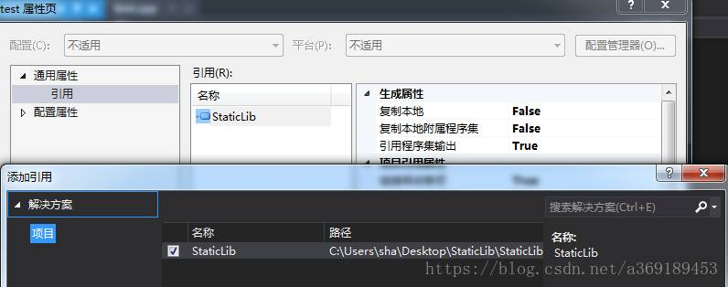
方式4: 在文件中使用#pragma comment（）指定.lib文件的位置。如图

在创建win32控制台程序或者win32项目的时候，勾选Dll就可以，进入项目后发现自动生成一些文件。如图

我们还是正常定义和实现函数或者类，特别的是动态库生成的时候需要在接口前加上
__declspec(dllexport)，而导入的时候需要加__declspec(dllimport)。这里使用通常的宏定义做法，如图所示。
头文件：
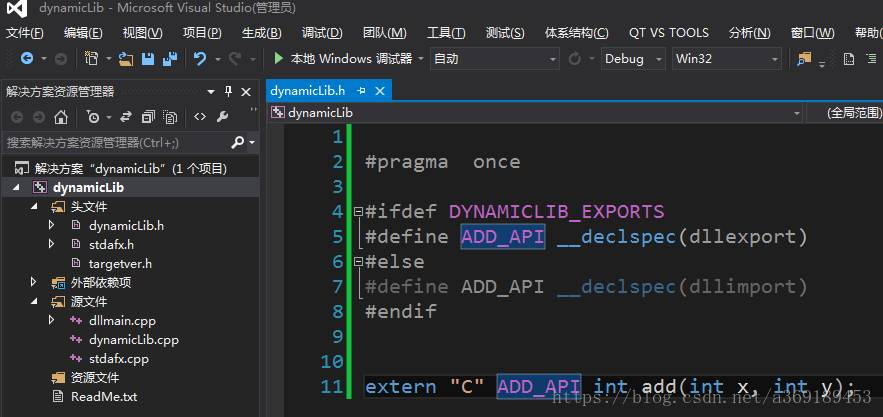
源文件：

生成动态库：
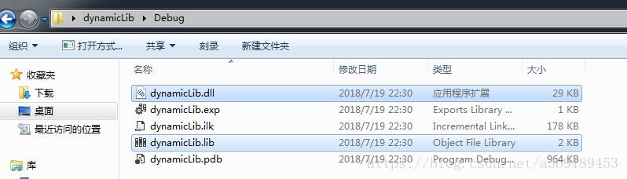
这里需要注意，生成两个有用文件，一个是.lib,一个是dll。这里的.lib本质上不同于静态库中的.lib。这里的.lib一般是一些索引信息，记录了dll中函数的入口和位置，dll中是函数的具体实现。而静态库中的lib包含了索引和实现。
加载动态库有两种方式，分为隐式加载和显示加载。
隐式加载
所需文件：接口.h头文件，dll文件，lib文件。
.h和.lib加载方式与静态加载完全一致。但.dll文件必须放在环境变量指定的目录下。当然通常是与目标.exe文件放在一起。
显示加载
所需文件：dll文件。
利用LoadLibrary（）函数进行加载。如图
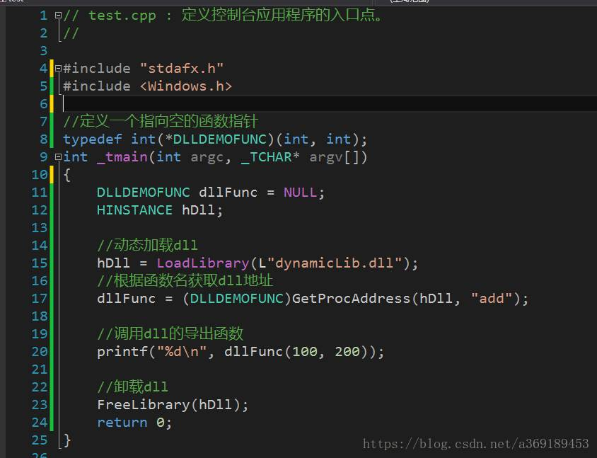
按道理不需要.h头文件，但是前提是你知道接口是啥样的。
隐式加载和显示加载区别很明显，显示加载使用灵活，需要时加载，用完卸载，而隐式加载伴随着整个程序的生命周期。
库分为静态库和动态库。静态库与可执行文件打包，动态库与可执行文件独立。静态库加载需要.lib和.h文件。动态库隐式加载需要.dll、.h、.lib文件，显示加载只需要.dll文件。